逐秒帧附录 · 玩法架构证据图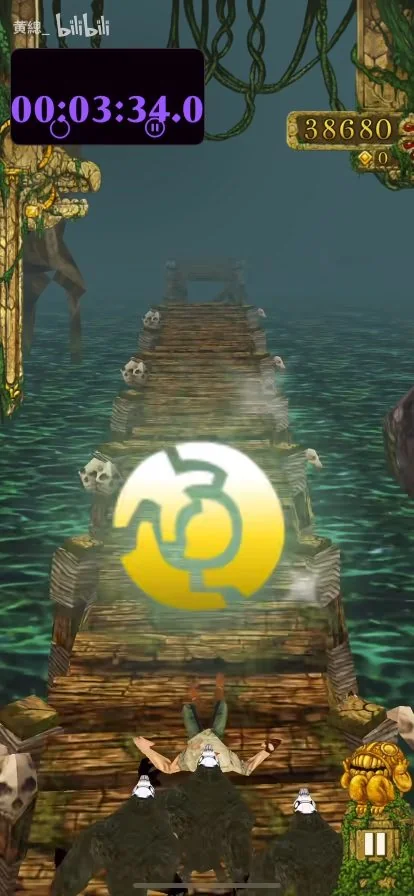
216s · 木桥
木桥上的黄色发光道具。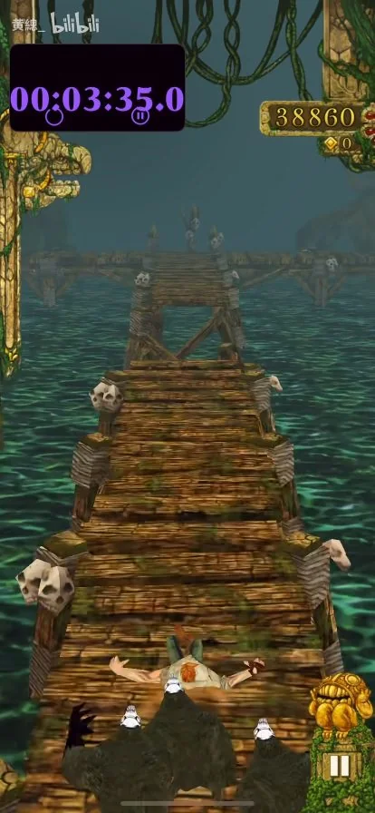
217s · 木桥
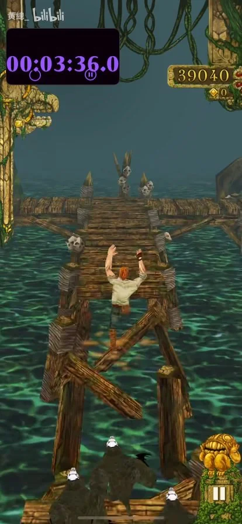
218s · 木桥
木桥断口与交叉木支架。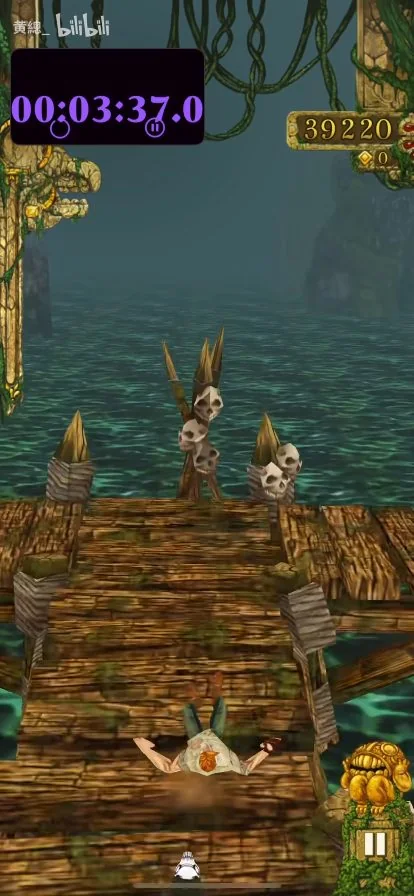
219s · 木桥
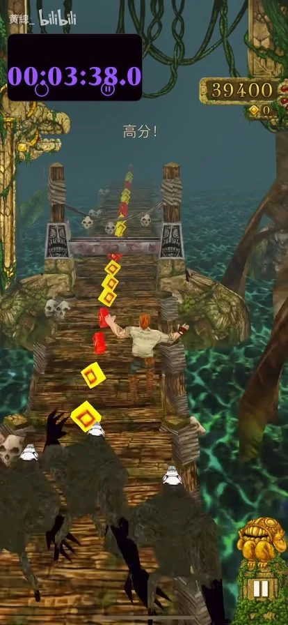
220s · 木桥
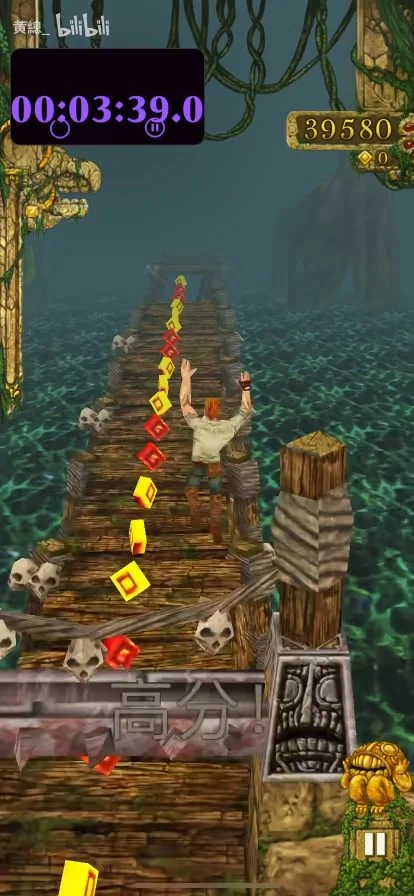
221s · 木桥
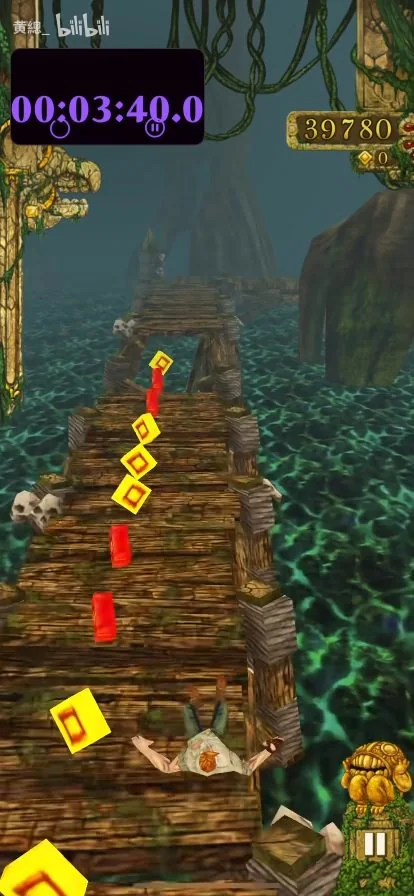
222s · 木桥
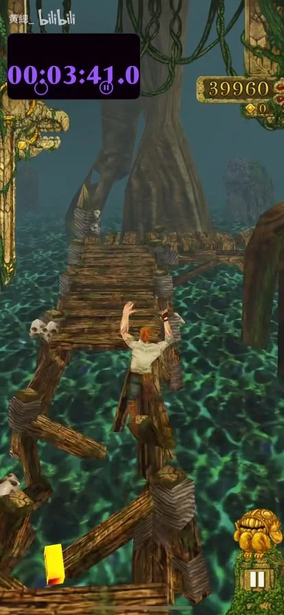
223s · 木桥
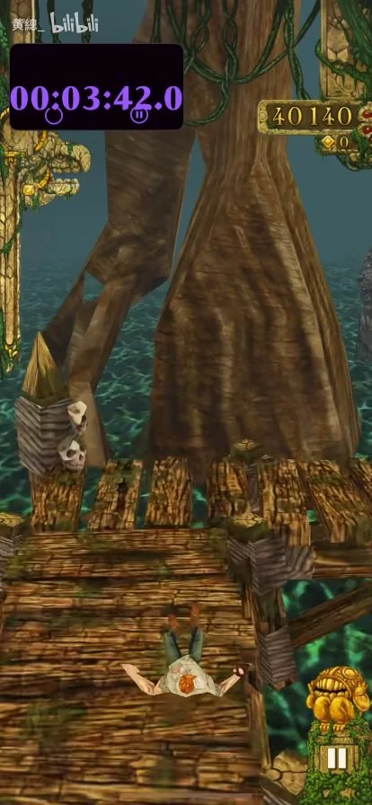
224s · 木桥
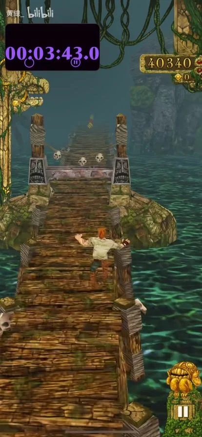
225s · 木桥
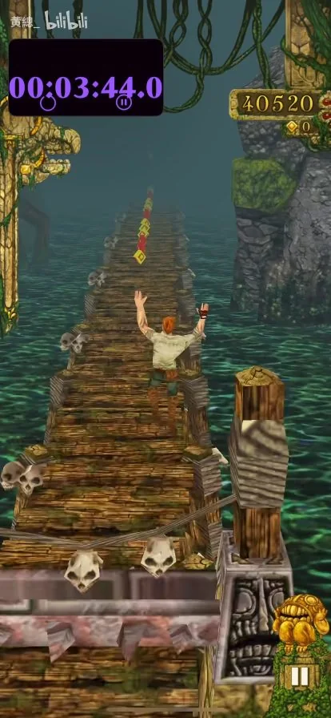
226s · 木桥
木桥低矮浮雕横梁。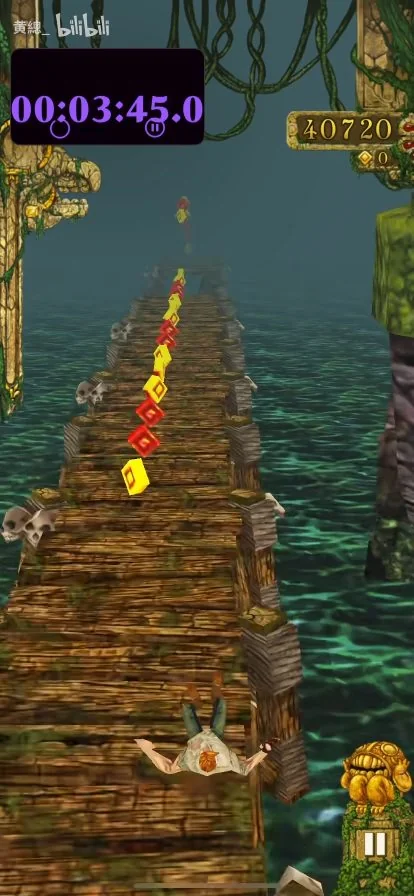
227s · 木桥
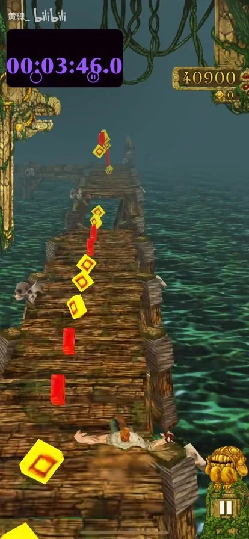
228s · 木桥
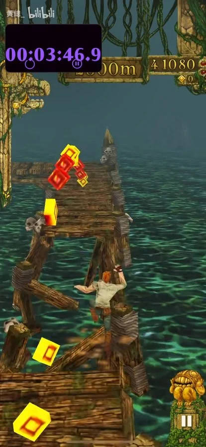
229s · 木桥
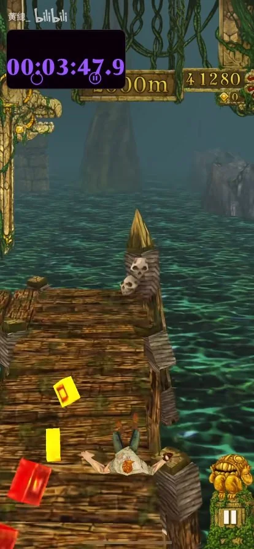
230s · 木桥
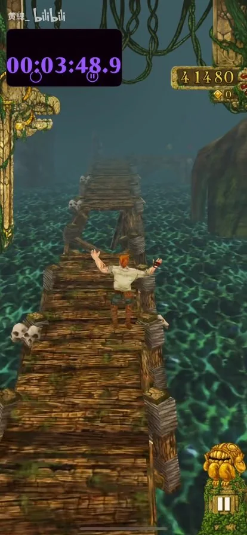
231s · 木桥
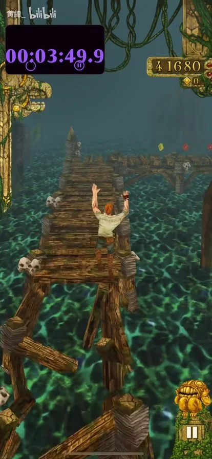
232s · 木桥
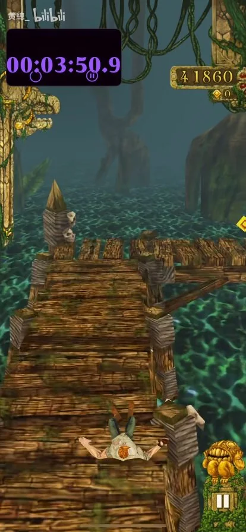
233s · 木桥